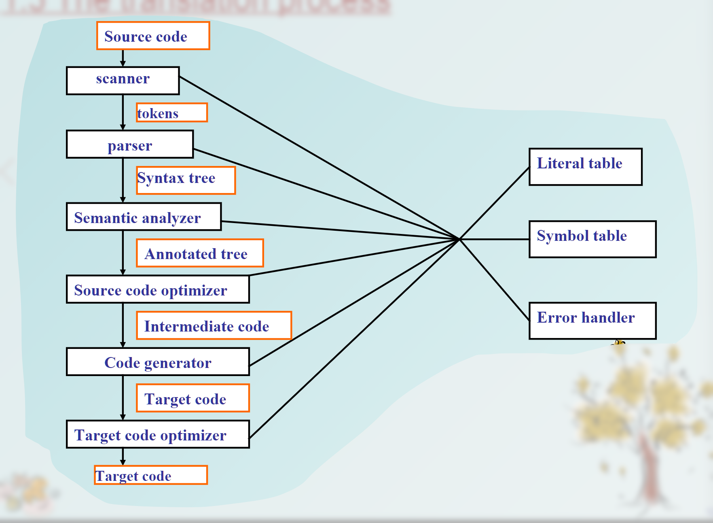
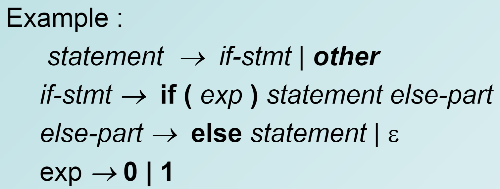

Some notes of Compile Principle and Technology course lecture of Prof. Feng Yan, Zhejiang University.
Reference materials: “the Tiger Book”, “the Dragon Book”
Chapter 1 Introduction
Compiler
- What is a compiler?
- A program translating programs from source language to target language
- Programs related to compilers
- Interpreters: a translator that executes source program immediately
- Assemblers: assembly $\rightarrow$ object code
- Linkers: Collects code from different files; Connects code for functions provided by std library or OS
- Loaders: resolve relocatable address
- Preprocessors: remove comments, perform includes and macros
- Editor
- Debuggers
- Profiler: collect statistic on execution
- Project manager
The translation process

Components
- Scanner(Lexer): lexical anlysis
- Parser: parsing program structures
- Semantic analyzer
- detect semantic errors
- collect type info, type checking, recognize operators and operands
- Source code optimizer: source-level optimization (and macro expansion?)
- Code generator: intermediate code or IR to target language code
- Target code optimizer
Data Structures
The parsing process
- call a scanner to fetch the next token e.g.
getToken() parse()- single pass
- multi-pass: use the syntax tree for the further passes
- the structure of the syntax tree depends on syntactic structure of the language
- process with error :
- error in scanner/lexer: generate an error token
- error in parser:
- report error messages
- recover and continue parsing to find out more errors
- may perform error repair
Context-free Grammar
You should be familiar about CFG if you have learned computational theory~
- CFG: 4-tuple
- : non-terminal symbols
- : terminal symbols
- : start symbol a distinguished non-terminal
- “Directly derives” relation (single step generation) $\Rightarrow = {(\alpha A \gamma, \alpha \beta \gamma\ |\ A\rightarrow\beta)}$
- The language defined by :
- Left recursive: non-terminal A appears as the first symbol on the right-hand side of the rule
- Right recursive: vice versa
- Empty string: , the epsilon meta-symbol
- epsilon-production indicates the structure is optimal
